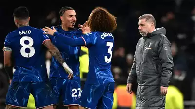
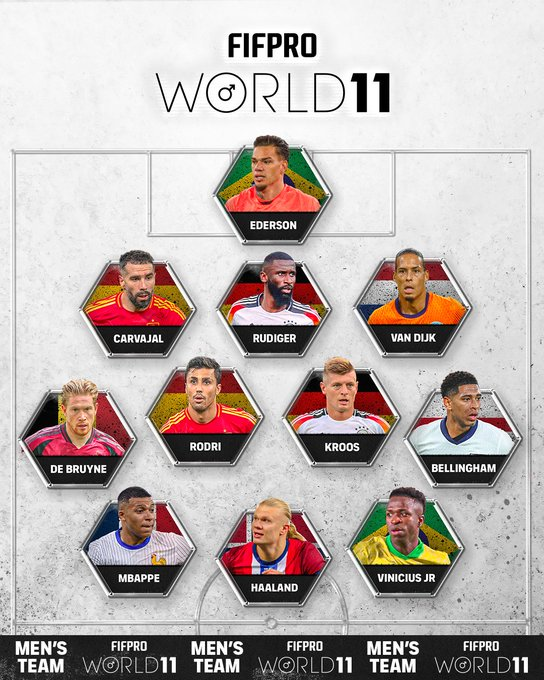
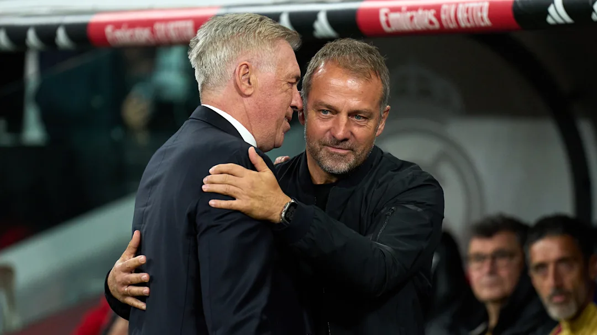

Tottenham vs Chelsea player ratings: Two Blues stars get 9/10 in win as Spurs man flops

Chelsea pulled off a stunning comeback victory to beat Tottenham 4-3 in a thrilling London derby at the Tottenham Hotspur Stadium, after going 2-0 down to goals from Dominic Solanke and Dejan Kulusevski.
Moises Caicedo and Kulusevski both could've easily seen red in separate incidents, but the VAR opted not to overturn the on-field decision. Caicedo then won a penalty which Cole Palmer converted to bring the visitors level to promise a fascinating finale to the London derby.
And with a quarter of the game to go, Enzo Fernandez fired home from 18 yards to put the Blues in front for the first time. Palmer got his second from the spot late on after being fouled by Sarr, before Son Heung-min scored a late consolation.
Express Sport takes a deep dive into the performances of both sets of players.Only the Spaniard will know why he dived out of his goal to give Solanke an open goal to finish into. He was also found wanting after Kulusevski's clever reverse finish beat him at his near post.
Back in the inverted role he excelled in against Aston Villa, the Ecuadorian didn't look entirely comfortable under the Spurs high press. Very lucky not to see red for his lunge on Sarr, which VAR deemed not to be worth a red. To rub salt in the wound, he won the penalty with a surging run.
Failed to keep Solanke goal-side for the opener and never recovered from there, leaving too much space for Spurs' attackers to float in and around the box. Kept it tight in the second half.Caught out by Son Heung-min on a number of occasions and the Frenchman didn't paint himself in glory for the second goal either.
Lost the ball in his own half three times in the space of two minutes between the first and second goals. The Belgian also struggled to get out to close down Kulusevski for the second goal. Booked and hooked at the break.The Argentinian has been in devastating form recently and he continued that here, driving his team forward and pulling the strings in midfield. His footwork for the winner was outstanding and later in the move, he fired beyond Forster. A statement performance from the Argentinian. Booked for his celebration, but he won't care.
A really sloppy first-half display from the 22-year-old, who misplaced passes in crucial areas of the pitch and somehow failed to find the target with an air-shot from six yards out. But he reacted well and was unlucky to be denied by a fine Forster save. When his moment came from the spot, he never looked like missing on both occasions and his panenka was simply filthy.Showed glimpses of his ability from the right flank and caused Udogie some problems with his runs inside. Almost sneaked an effort inside Forster's near post. Booked.
What a stunning goal from the winger, who clearly has so much ability when he wants to use it. Cutting in from the left flank, he breezed past Pedro Porro and a few more defenders before firing a daisy-cutter into the bottom corner from 20 yards. Now scored in back-to-back Premier League games, then played a role in winning the penalty. His improvement from his Manchester United days has been remarkable.
FIFPro Men's World 11: 2024 team & most popular player revealed

Introducing the 2024 FIFPRO Men's #World11, chosen by 21,266 players 🌟
More than 21,000 footballers from 70 countries were polled to pick the best player during the 2023/24 campaign across each position. At least one goalkeeper, three defenders, three midfielders and three forwards had to make the cut, while a final midfielder was added based on the swollen tally of votes.
Real Madrid dominated the lineup, boasting five current players as well as the freshly retired Toni Kroos. After a season which saw Carlo Ancelotti's side crowned champions of Spain and Europe, extending their record stranglehold of silverware in both competitions, the proliferation of white shirts in the World XI is understandable.
Vinicius Junior infamously missed out on this year's Ballon d'Or, but earned his spot on the left wing of this hypothetical team. Antonio Rudiger and summer recruit Kylian Mbappe were included, yet no player from any club could match Bellingham's 11,176 votes - more than half the total number of players polled.
Right-back Dani Carvajal also got the nod. On top of his glittering array of club honours, the Spain international helped his nation win Euro 2024.Manchester City midfielder Rodri was part of that international triumph - and deservedly won recognition as the Player of the Tournament. Much to the disgust of all those associated with Real Madrid, Rodri also lifted the 2024 Ballon d'Or.
Pep Guardiola's Premier League champions boasted seven players among the 26 nominees and Rodri was joined by his City teammates Ederson, Erling Haaland and Kevin De Bruyne, who made the cut despite missing almost half the campaign with a hamstring injury.
Liverpool's Virgil van Dijk completed an elite lineup.
Barcelona & Real Madrid learn opponents in 2024/25 Copa del Rey third round draw

While Hansi Flick's La Liga leaders go up against UD Barbastro for the second season on the spin, Real Madrid have been paired with CD Minera. Both ties will take place on either 3, 4 or 5 January 2025, although the final times and dates are yet to be finalised in Spanish football's forever changeable calendar.
Real Madrid's tie may be delayed even further given the complications of rescheduling their La Liga fixture with Valencia, which was postponed in October following severe flooding in the area.
Whenever the cup tie does eventually kick off, it will not be held at Minera's modest venue, Estadio Municipal Angel Celdran. Due to poor infrastructure, Carlo Ancelotti will take his mighty Galacticos to Cartagonova, the home of nearby Cartagena.
Barcelona know all about the Campo Municipal de Deportes Barbastro. While the region is famed for its delicious tomatoes, the Catalan giants will associate it with a narrow escape. A side led by Xavi Hernandez had to hold on for a 3-2 victory in January 2024, scraping into the fourth round as 6,000 spectators from a town of 16,000 rewarded their beaten hosts with a standing ovation.
Neither side can scarcely afford to be overexerted as the congested fixture list allows for little let-up. Barca and Real Madrid are both in action in the Spanish Supercup a few days after their cup ties. While the capital club go up against Mallorca on 9 January, Barca are pitted against reigning Copa del Rey champions Athletic Club one day earlier.
To add to the mounting sense of congestion, both fixtures and the final scheduled for 12 January will be staged in Jeddah, Saudi Arabia - more than 4,000 miles away from Spanish soil.